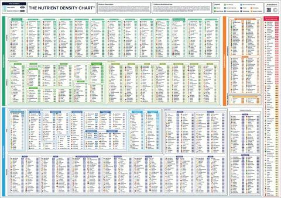

A few years ago, I got tired of guessing how much a cup of almond flour weighed. Every recipe said something different. Some said 90 grams. Some said 110. Some didn't give a weight at all and just said "one cup," which as you know by now is almost meaningless. So I started weighing everything myself. I bought a bag of every flour, every sugar, every nut, every dried fruit I could find. I measured them with three different methods. Spooned and leveled. Dipped and swept. Packed when it made sense. I wrote everything down in a notebook that is now covered in flour stains and coffee rings.
That notebook became the basis for the density chart I use every single day. It has over 150 ingredients. I've added to it over the years as I discover new things. A student brings me a bag of teff flour, I weigh it, add it to the chart. I decide to bake with coconut sugar, I weigh it, add it to the chart. The chart is never finished. But it's already saved me from so much guesswork.
Let me share the most important entries with you. The ones you'll use all the time.
All-purpose flour, spooned and leveled, is 120 grams per cup. This is your baseline. Most recipes that use weight assume 120 grams. If a recipe just says "1 cup flour" with no other instructions, they probably mean spooned and leveled. But if they say "1 cup flour, sifted," that's different. Sift first, then measure. That gives you about 100 grams per cup. If they say "1 cup sifted flour," measure first, then sift. That gives you about 120 grams of flour that then becomes fluffier. The order of the words matters.
Bread flour is slightly heavier, about 127 grams per cup spooned. The extra protein makes it denser. Whole wheat flour is about 120 grams, same as all-purpose, but it behaves differently because of the bran. Rye flour is lighter, around 110 grams. Spelt is similar to all-purpose, 120 grams. Oat flour, if you make it by grinding oats, is about 90 grams. Store-bought oat flour is closer to 110 because it's more finely ground.
Now for the gluten-free flours, because this is where people really struggle. Almond flour is about 96 grams per cup. It's light because the nuts are ground but still have air space. Coconut flour is 128 grams per cup, and it absorbs liquid like crazy. Brown rice flour is about 120 grams. White rice flour is about 125. Sorghum flour is about 120. Teff flour is about 120 but it's very dense in terms of flavor. Buckwheat flour is about 120. Cassava flour is about 120. Chickpea flour is about 90, surprisingly light. Arrowroot starch is about 120. Tapioca starch is about 120. Potato starch is about 120.
What I've learned from measuring all these flours is that most of them cluster around 120 grams per cup when spooned and leveled. The exceptions are almond flour, coconut flour, and chickpea flour. If you memorize those three, you'll be fine.
Moving on to sugars. Granulated white sugar is 200 grams per cup. That's an easy number to remember. Brown sugar, packed, is 220 grams per cup. If a recipe calls for brown sugar, they almost always mean packed unless they specify "loose." Powdered sugar, also called confectioners' sugar, is 120 grams per cup unsifted. If you sift it, it's about 100 grams. I never sift powdered sugar unless I'm making a very delicate frosting. For most things, unsifted is fine.
Coconut sugar is about 180 grams per cup. It's less dense than white sugar. Maple sugar is about 150. Date sugar is about 140. Demerara sugar, the kind with large crystals, is about 180. Turbinado is about 180. Muscovado, which is very moist, is about 220, similar to brown sugar.
Now for fats, because people mess these up constantly. Butter, one cup, solid and cubed, is 227 grams. That's exactly 8 ounces. One stick of butter is 113 grams, which is half a cup. I have that memorized. Shortening is about 205 grams per cup. Vegetable oil is 218 grams per cup. Coconut oil, solid, is about 205. Coconut oil, melted, is also 205 because weight doesn't change when you melt it, but volume does. That's important. If you measure melted coconut oil in a liquid measuring cup, it's still 205 grams per cup. But if you melt it and then measure by volume, you need to account for the fact that solid coconut oil has air pockets. This is why weight is better.
Liquids are easier. Water is 237 grams per cup. Milk is 244 grams per cup. Buttermilk is 242 grams per cup. Heavy cream is 240 grams per cup. Yogurt is about 245 grams per cup. Honey is 340 grams per cup, which is much heavier than water. Maple syrup is 320 grams per cup. Molasses is about 340, similar to honey. Corn syrup is about 340. If you're substituting honey for sugar, you have to account for the extra weight and the extra liquid.
Leaveners are surprisingly dense. Baking soda is 230 grams per cup. Baking powder is also about 230 grams per cup, but it's usually measured in teaspoons. One teaspoon of baking soda is about 4.8 grams. One teaspoon of baking powder is about 4.8 grams as well. This is useful to know if you're scaling a recipe and don't have a tiny scale. 1 teaspoon equals 4.8 grams. For a 5x recipe, you need 5 times 4.8 times the exponent. Do the math.
Salt is another one where density varies wildly by type. Table salt is 290 grams per cup. That's very dense. One teaspoon of table salt is 6 grams. Morton kosher salt is 220 grams per cup, 3 grams per teaspoon. Diamond Crystal kosher salt is 135 grams per cup, about 2.5 grams per teaspoon. If a recipe calls for 1 teaspoon of kosher salt and you use table salt, you're adding twice as much sodium. When you scale a recipe, this difference multiplies. Always check which salt the author used. If you don't know, assume table salt or use weight.
Cocoa powder is another tricky one. Natural cocoa powder, spooned and leveled, is about 85 grams per cup. Dutch-process cocoa is about 95 grams per cup. The alkalization process makes it denser. If a recipe calls for 1 cup of natural cocoa and you use Dutch, you're adding about 12% more cocoa by weight. That might make your cake more bitter or drier. Not a disaster, but not ideal.
Nuts and dried fruits are all over the place. Chopped walnuts are about 120 grams per cup. Chopped pecans are about 110. Chopped almonds are about 140. Whole almonds are about 150. Slivered almonds are about 110. Shredded coconut, unsweetened, is about 80 grams per cup. Sweetened shredded coconut is about 100 because the sugar adds weight. Raisins are about 160 grams per cup. Dried cranberries are about 150. Dried apricots, chopped, are about 150. Dates, pitted and chopped, are about 170.
What I've learned from measuring all these is that the weight of a cup of anything depends on how you chop it, how you pack it, and the moisture content. That's why weight is better. But when a recipe gives you volume, at least now you have a baseline.
I keep a laminated chart on my cabinet door with the most common ones. All-purpose flour 120. Bread flour 127. Whole wheat 120. Almond flour 96. Coconut flour 128. Granulated sugar 200. Brown sugar packed 220. Powdered sugar 120. Butter 227. Oil 218. Milk 244. Honey 340. Baking soda 230. Table salt 290. Kosher salt Morton 220. Cocoa natural 85. Cocoa Dutch 95.
That chart has saved me so many times. I can look up from whatever I'm doing, glance at the cabinet, and know that 1 cup of honey is 340 grams. I don't have to remember. I just have to look.
For ingredients that aren't on my chart, I have a tool that does the lookup.
If you use my chart and your cake comes out dry, maybe your flour is denser than mine. Next time, add a little more liquid or reduce the flour by 5 grams per cup. Baking is about feedback loops. The chart gives you a starting point. Your taste buds and your toothpick give you the final answer.
I've been using these numbers for years. They work for me. I hope they work for you too.
— Olivia
P.S. My laminated chart is so old that the edges are curling up. I've been meaning to reprint it for maybe two years. But I'm kind of attached to this one. It's been with me through hundreds of bakes.